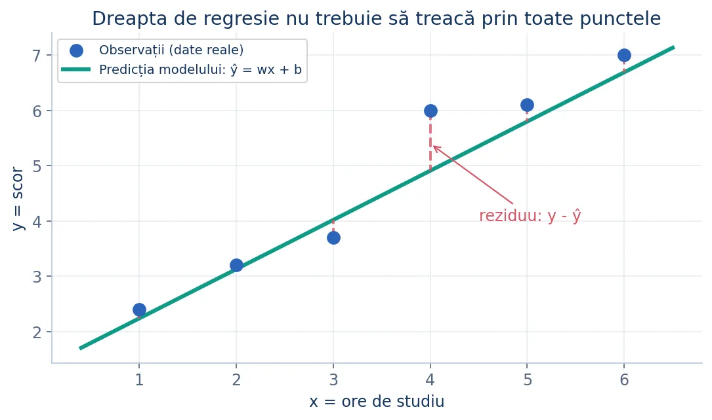
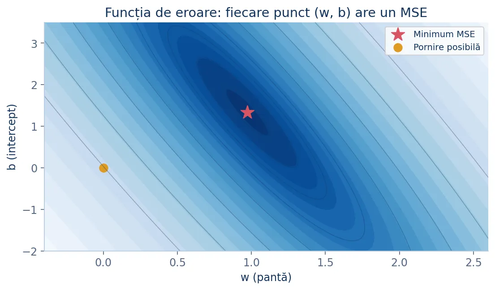
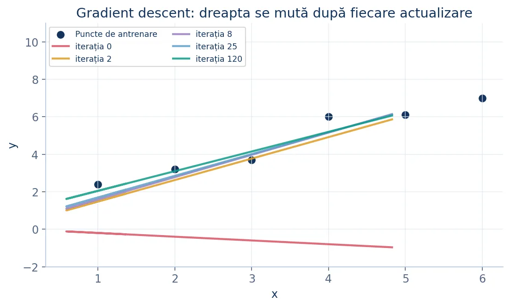
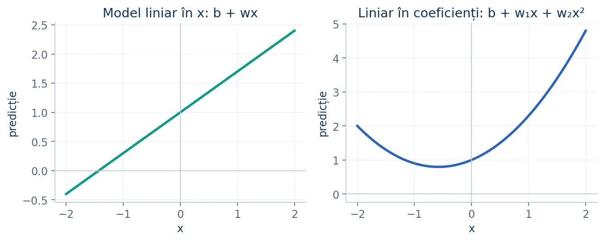
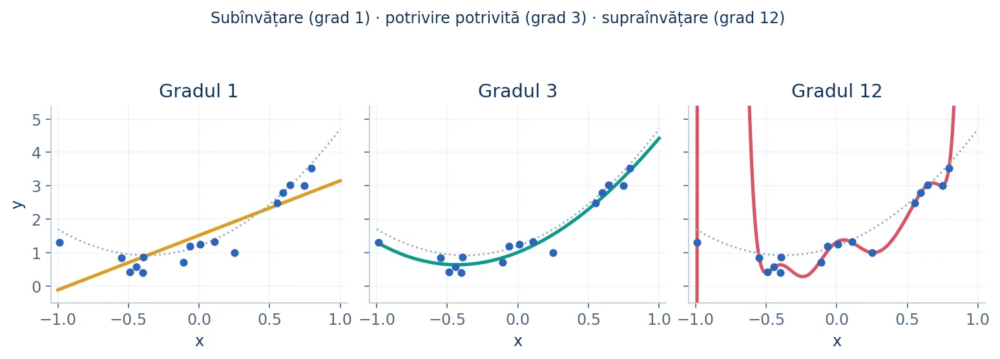
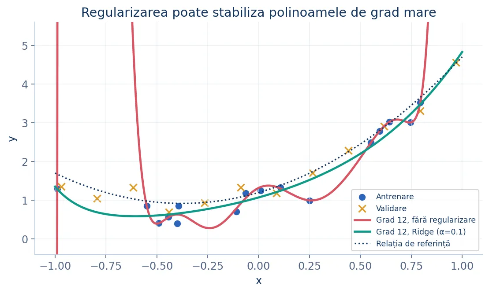
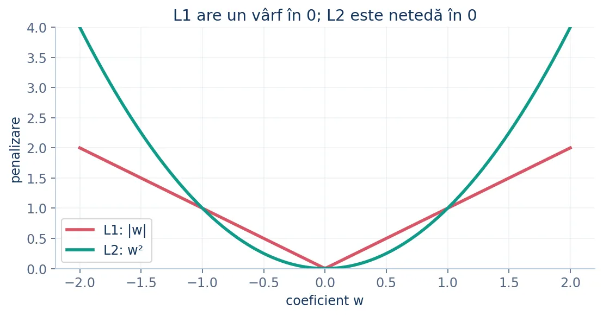

Regresia liniară
De la ecuația unei drepte la antrenarea unui model: geometrie, erori, cea mai bună dreaptă, gradient descent, polinoame și regularizare. Noțiunile sunt explicate de la exemple cu un singur număr de intrare până la implementări în scikit-learn.
1. O problemă concretă: ce înseamnă o predicție?
Presupunem că vrem să aproximăm scorul unui elev folosind numărul de ore de pregătire.
Pentru fiecare elev cunoaștem două valori: x, numărul de ore studiate, și y, scorul obținut. Așezăm perechile (x, y) ca puncte în plan. Încercăm apoi să trasăm o dreaptă care să urmeze tendința datelor. Folosind dreapta, putem aproxima un scor pentru un număr de ore pe care nu l-am întâlnit înainte.
| Ore de pregătire (x) | Scor observat (y) | Ce învață modelul |
|---|---|---|
| 1 | 2 | O pereche de date |
| 2 | 3 | Încă o observație |
| 3 | 5 | Tendință crescătoare |
| 4 | ? | Aproximăm folosind dreapta |

2. Legătura cu geometria: ecuația dreptei
Regresia liniară cu o singură caracteristică folosește exact forma învățată la geometria analitică.
- Dacă
w > 0, dreapta crește: atunci când x crește cu 1, predicția crește cu w. - Dacă
w < 0, dreapta descrește. - Dacă
w = 0, predicția este aceeași pentru orice x. - Dacă x = 0, predicția este b; mutarea lui b deplasează întreaga dreaptă vertical.
De exemplu, pentru ŷ = 2x + 1, la x = 3 prezicem 7. Alegerea pantei și a interceptului înseamnă alegerea unei drepte. Învățarea constă în găsirea valorilor potrivite pentru w și b.
w = 2
b = 1
for x in [0, 1, 3, 5]:
y_estimat = w * x + b
print(f"x={x}, predicție={y_estimat}")
3. Erori și reziduuri: cum știm că o dreaptă este bună?
Pentru fiecare observație comparăm valoarea reală cu predicția.
Dacă am aduna pur și simplu reziduurile, diferențele pozitive și negative s-ar putea anula. În schimb putem aduna pătratele lor: fiecare contribuție este nenegativă, iar erorile mari primesc o penalizare mai puternică.
De exemplu, pentru trei erori [1, -2, 1], MSE este (1 + 4 + 1) / 3 = 2. Dorim să alegem dreapta care face MSE cât mai mic posibil.
def mse(y_real, y_prezis):
n = len(y_real)
suma = 0
for i in range(n):
eroare = y_prezis[i] - y_real[i]
suma += eroare * eroare
return suma / n
print(mse([2, 4, 6], [3, 2, 7])) # 2.0
4. Metrici de evaluare pentru regresie
Nu există o singură măsură perfectă a calității predicțiilor.
| Metrică | Definiție | Cum o interpretăm |
|---|---|---|
| MAE | media valorilor |ŷ − y| | Are aceleași unități ca ținta; mai puțin sensibilă la erori extreme decât MSE. |
| MSE | media valorilor (ŷ − y)² | Penalizează puternic erorile mari; unități la pătrat. |
| RMSE | √MSE | În unitățile lui y; crește mult la erori mari. |
| R² | 1 − SSE / SST | Compară modelul cu predicția constantă dată de media țintelor. |
Valoarea R² = 1 înseamnă predicții perfecte; R² = 0 înseamnă același SSE ca predicția constantă prin medie; R² < 0 înseamnă un model mai slab decât acea predicție. Pentru o țintă constantă, formula matematică are numitor zero și necesită tratare separată.
from math import sqrt
def metrici(y_real, y_prezis):
n = len(y_real)
erori = [y_prezis[i] - y_real[i] for i in range(n)]
mae = sum(abs(e) for e in erori) / n
mse = sum(e * e for e in erori) / n
return mae, mse, sqrt(mse)
print(metrici([3, 4, 5], [4, 2, 5]))
# (1.0, 1.666..., 1.290...)
5. Cum arată un model cu mai multe caracteristici?
În inteligența artificială avem deseori mai multe intrări, nu doar un x.
Un scor ar putea depinde de numărul de ore de studiu (x₁), de numărul de exerciții rezolvate (x₂) și de alte informații. Fiecărei caracteristici îi asociem un coeficient (o „greutate”).
Geometric, cu o singură caracteristică avem o dreaptă în plan. Cu două caracteristici, modelul descrie un plan în spațiul tridimensional (x₁, x₂, y). Cu trei sau mai multe caracteristici vorbim despre un hiperplan, pe care nu îl mai putem desena direct.
6. De la formula obișnuită la forma matricială
Matricele ne ajută să scriem simultan predicțiile pentru toate observațiile.
Fiecare rând reprezintă un exemplu de antrenare; fiecare coloană reprezintă o caracteristică. Adăugăm la început o coloană numai cu 1, care permite includerea lui b în același vector de coeficienți.
Pentru doi elevi și două caracteristici, de exemplu:
O înmulțire matrice–vector înseamnă că înmulțim elementele fiecărui rând cu coeficienții corespunzători și le adunăm. Nu trebuie să memorăm un nou algoritm: este aceeași formulă, aplicată la mai multe observații.
# Fiecare elev are [ore, probleme_rezolvate].
date = [[2, 4], [3, 1], [5, 2]]
w = [3, 2]
b = 5
for elev in date:
y_estimat = b
for j in range(len(w)):
y_estimat += w[j] * elev[j]
print(y_estimat) # 19, 16, 24
7. „Cea mai bună dreaptă”: metoda celor mai mici pătrate
Încercăm să minimizăm suma pătratelor reziduurilor (OLS = Ordinary Least Squares).
Pentru o singură caracteristică, MSE depinde de numai două necunoscute: w și b. Reprezentată în spațiul parametrilor, eroarea are forma unui bol: pe fundul său se află perechea optimă.

Atunci când variația lui x nu este nulă, putem calcula optimul fără încercări succesive. Notăm cu x̄ și ȳ mediile valorilor.
Pentru punctele (1,2), (2,3), (3,5), obținem x̄ = 2, ȳ = 10/3, w = 3/2 și b = 1/3. Dreapta estimată devine ŷ = 1.5x + 0.333….
def regresie_ols(x, y):
n = len(x)
if n != len(y) or n < 2:
raise ValueError("Sunt necesare cel puțin două perechi")
media_x = sum(x) / n
media_y = sum(y) / n
sus = sum((x[i] - media_x) * (y[i] - media_y)
for i in range(n))
jos = sum((x[i] - media_x) ** 2 for i in range(n))
if jos == 0:
raise ValueError("Toate valorile lui x sunt identice")
w = sus / jos
b = media_y - w * media_x
return w, b
print(regresie_ols([1, 2, 3], [2, 3, 5]))
# (1.5, 0.3333333333333335)
8. Cum deducem soluția matricială?
Ecuațiile normale apar atunci când căutăm un minim al sumei pătratelor.
Scriem toate reziduurile într-un vector r = Xθ − y. Suma pătratelor este rᵀr. Pentru a găsi minimul, calculăm derivata în raport cu vectorul coeficienților și o egalăm cu zero. Este echivalentul regulii de la funcțiile de gradul al doilea, dar aplicată simultan mai multor necunoscute.
La un minim interior, gradientul este vectorul zero. Înmulțind cu n/2 și desfacând parantezele:
9. Pseudoinversa: ce facem când inversa nu există?
Pseudoinversa Moore–Penrose generalizează soluția fără a cere ca XᵀX să poată fi inversată.
Notăm pseudoinversa cu X⁺. Dacă există mai multe seturi de coeficienți care produc aceeași eroare minimă, X⁺y îl alege pe cel cu norma euclidiană cea mai mică. Dacă modelul nu poate trece prin toate punctele, obținem tot soluția celor mai mici pătrate.
De unde vine? Ideea matematică (pentru aprofundare) este descompunerea în valori singulare, sau SVD. Ea scrie matricea ca produsul a două transformări ortogonale și al unei matrice diagonale, în care sunt evidențiate „direcțiile” independente ale datelor.
De exemplu, dacă două coloane de date sunt identice, modelul nu poate determina separat ce parte revine fiecăruia dintre cei doi coeficienți. Pseudoinversa găsește un răspuns echilibrat, fără să încerce să inverseze o matrice singulară.
import numpy as np
# Coloanele 2 și 3 sunt identice.
X = np.array([
[1, 1, 1],
[1, 2, 2],
[1, 3, 3]
], dtype=float)
y = np.array([2, 3, 4], dtype=float)
theta = np.linalg.pinv(X) @ y
print(np.round(theta, 3)) # [1. 0.5 0.5]
print(X @ theta) # [2. 3. 4.]
10. Avantaje și limite ale soluției în formă închisă
O singură operație matematică poate înlocui multe iterații, dar nu este mereu cea mai bună alegere.
- Avantaj: nu alegem rata de învățare și nu trebuie să așteptăm convergența.
- Limită: problema matricială poate deveni costisitoare dacă există foarte multe caracteristici.
- Limită: caracteristicile redundante sau aproape redundante pot face calculele instabile.
- Limită comună modelelor OLS: erorile mari (outlierii) au influență puternică, deoarece le ridicăm la pătrat.
- Limită de modelare: o dreaptă nu poate surprinde întotdeauna o relație curbată.
În practică, o alternativă importantă constă în optimizare iterativă: pornim cu coeficienți oarecare și îi îmbunătățim treptat, fără să calculăm explicit pseudoinversa.
11. Intuiția gradient descent: cum învață dreapta?
Ne imaginăm că suntem pe un deal și vrem să coborâm spre cel mai jos punct.
Funcția MSE are o valoare pentru fiecare alegere a parametrilor (w,b). În punctul în care ne aflăm, gradientul arată direcția în care eroarea crește cel mai repede. Noi ne deplasăm în direcția opusă gradientului.

La fiecare pas: (1) calculăm predicțiile, (2) calculăm erorile, (3) determinăm gradientul, (4) ajustăm coeficienții și repetăm. Dacă η este prea mare putem sări peste minim; dacă este prea mic, convergența va fi lentă.
12. Cum calculăm gradientul? Derivare pe înțelesul liceului
Pornim de la un pătrat: derivata lui u² este 2u înmulțit cu derivata lui u.
Pentru fiecare punct, eroarea este eᵢ = wxᵢ + b − yᵢ. Când modificăm w cu foarte puțin, eroarea se schimbă proporțional cu xᵢ; când modificăm b, eroarea se schimbă cu aceeași cantitate pentru toate punctele. Aplicând regula derivării funcțiilor compuse, obținem:
Să presupunem că avem punctele (1,2), (2,3), (3,5) și pornim cu w = 0, b = 0. Predicțiile sunt toate zero, iar erorile sunt −2, −3 și −5.
Dacă alegem η = 0.05, primul pas dă w = 0 − 0.05·(−46/3) ≈ 0.7667 și b = 0 − 0.05·(−20/3) ≈ 0.3333. Dreapta nouă este deja mai apropiată de observații decât cea inițială.
x = [1, 2, 3]
y = [2, 3, 5]
w, b = 0.0, 0.0
eta = 0.05
n = len(x)
gradient_w = 0
gradient_b = 0
for i in range(n):
eroare = w * x[i] + b - y[i]
gradient_w += eroare * x[i]
gradient_b += eroare
gradient_w = 2 * gradient_w / n
gradient_b = 2 * gradient_b / n
w -= eta * gradient_w
b -= eta * gradient_b
print(round(w, 4), round(b, 4)) # 0.7667 0.3333
13. Implementare completă: gradient descent pentru o singură caracteristică
Înlocuim unicul pas printr-o buclă de antrenare.
def antreneaza_linie(x, y, eta=0.05, epoci=2000):
n = len(x)
w, b = 0.0, 0.0
istoric = []
for epoca in range(epoci):
gradient_w = 0.0
gradient_b = 0.0
eroare_totala = 0.0
for i in range(n):
predictie = w * x[i] + b
eroare = predictie - y[i]
gradient_w += eroare * x[i]
gradient_b += eroare
eroare_totala += eroare ** 2
gradient_w = 2 * gradient_w / n
gradient_b = 2 * gradient_b / n
w -= eta * gradient_w
b -= eta * gradient_b
if epoca % 200 == 0:
istoric.append(eroare_totala / n)
return w, b, istoric
x = [1, 2, 3]
y = [2, 3, 5]
w, b, erori = antreneaza_linie(x, y, eta=0.05)
print(round(w, 3), round(b, 3))
print([round(e, 3) for e in erori[:4]])
În buclă, mai întâi acumulăm derivatele folosind coeficienții vechi. Abia după ce am analizat toate exemplele actualizăm w și b. Această ordine este importantă: altfel am amesteca informații din două iterații diferite.
14. Gradient descent pentru mai multe caracteristici
Fiecare caracteristică are propria derivată și propriul coeficient.
Implementarea de mai jos folosește numai liste și bucle. Este mai lungă decât varianta cu NumPy, dar arată foarte clar ce se întâmplă.
def antreneaza(X, y, eta=0.05, epoci=3000):
n = len(X)
k = len(X[0])
w = [0.0] * k
b = 0.0
for epoca in range(epoci):
gw = [0.0] * k
gb = 0.0
for i in range(n):
predictie = b
for j in range(k):
predictie += w[j] * X[i][j]
eroare = predictie - y[i]
gb += eroare
for j in range(k):
gw[j] += eroare * X[i][j]
b -= eta * (2 * gb / n)
for j in range(k):
w[j] -= eta * (2 * gw[j] / n)
return w, b
X = [[0, 0], [1, 0], [0, 1], [1, 1]]
y = [2, 5, 4, 7] # y = 3*x1 + 2*x2 + 2
w, b = antreneaza(X, y)
print([round(v, 2) for v in w], round(b, 2))
# [3.0, 2.0] 2.0
Implementarea generalizează ușor formula unidimensională. Pentru seturi foarte mari, NumPy efectuează eficient aceste operații prin produsul matrice–vector; pentru învățare, buclele sunt adesea mai intuitive.
15. Batch, stochastic și mini-batch gradient descent
Diferența este câte observații folosim pentru a calcula o actualizare.
| Variantă | Cum actualizează | Avantaj / compromis |
|---|---|---|
| Batch GD | Toate cele n exemple | Gradient stabil, dar un pas poate fi costisitor. |
| Stochastic GD (SGD) | Un exemplu la un pas | Actualizări ieftine și zgomotoase; necesită controlul ratei. |
| Mini-batch GD | Un grup mic de exemple | Compromis comun; potrivit pentru accelerare vectorizată. |
În această lecție demonstratorul folosește batch gradient descent, ca să poți urmări exact eroarea și gradientul. În cazul modelelor liniare, un gradient descend poate ajunge la același minim OLS, dacă rata și condițiile sunt potrivite.
16. De ce o dreaptă nu este întotdeauna suficientă?
Unele relații reale sunt curbe și nu pot fi reprezentate bine prin y = wx + b.
Imaginează-ți că randamentul crește când adăugăm ore de învățare, dar după un anumit punct oboseala începe să conteze. O relație de acest fel poate avea curbură. Dacă folosim doar x, orice coeficienți am alege, graficul rămâne o dreaptă.
O soluție este să construim noi caracteristici din cele vechi: x², x³, produse între caracteristici, transformări logaritmice atunci când sunt justificate etc. Acest proces se numește feature engineering.

def caracteristici_polinomiale(x, grad):
rezultat = []
for valoare in x:
rand = []
for putere in range(1, grad + 1):
rand.append(valoare ** putere)
rezultat.append(rand)
return rezultat
print(caracteristici_polinomiale([1, 2, 3], 3))
# [[1, 1, 1], [2, 4, 8], [3, 9, 27]]
17. De la prea simplu la prea complicat: underfitting și overfitting
Un model flexibil poate învăța și zgomotul, nu doar relația dintre variabile.

- Underfitting: eroare mare și pe antrenare, și pe validare; modelul este prea simplu sau insuficient antrenat.
- Overfitting: eroare foarte mică pe antrenare, dar mult mai mare pe exemple noi.
- Generalizare: scopul nu este să memorăm observațiile, ci să prezicem bine pentru date necunoscute.
Împărțim datele în train și test; dacă alegem gradul polinomului sau intensitatea regularizării, folosim și un set de validare (sau cross-validation). Datele de test trebuie păstrate pentru evaluarea finală, nu pentru ajustări repetate.
def calculeaza_mse(x, y, w, b):
total = 0
for i in range(len(x)):
eroare = w * x[i] + b - y[i]
total += eroare * eroare
return total / len(x)
x_train = [0, 1, 2, 3]
y_train = [1, 3, 5, 7]
x_val = [4, 5]
y_val = [9, 12]
print(calculeaza_mse(x_train, y_train, 2, 1)) # 0.0
print(calculeaza_mse(x_val, y_val, 2, 1)) # 0.5
18. Regularizarea: penalizarea coeficienților prea mari
Adăugăm la eroare un cost suplimentar pentru modele prea complexe.
Dacă am introdus multe caracteristici, modelul poate ajunge să folosească coeficienți foarte mari pentru a urmări variații mici ale datelor. Regularizarea încurajează valori mai temperate, chiar dacă eroarea de antrenare crește puțin.
În mod obișnuit, interceptul b nu este regularizat. Se penalizează numai coeficienții caracteristicilor w₁,...,wₖ, pentru a nu pedepsi simpla deplasare a predicțiilor.

Regularizarea nu este un remediu universal. Dacă relația este foarte simplă și datele sunt curate, un λ prea mare poate produce underfitting. În plus, penalizările depind de scara caracteristicilor, deci standardizarea este adesea importantă.
19. Ridge (regularizare L2): coeficienți mai mici
Ridge adaugă suma pătratelor coeficienților la eroarea totală.
Ridicarea la pătrat face penalizarea coeficienților mari foarte puternică. Ridge reduce în general valorile lor, dar nu le face exact zero. Este utilă când multe variabile contribuie puțin la predicție sau când variabilele sunt corelate.
Dacă centram coloanele lui X și ținta y, pentru λ > 0 obținem o formulă apropiată de ecuațiile normale:
Pentru o singură caracteristică, formula este foarte simplă: numitorul primește λ. Putem implementa Ridge fără biblioteci.
def ridge_1d(x, y, lam):
n = len(x)
mx = sum(x) / n
my = sum(y) / n
sxy = sum((x[i] - mx) * (y[i] - my)
for i in range(n))
sxx = sum((xi - mx) ** 2 for xi in x)
if sxx + lam == 0:
raise ValueError("Nu putem determina o pantă unică")
w = sxy / (sxx + lam)
b = my - w * mx
return w, b
x = [1, 2, 3]
y = [2, 3, 5]
print(ridge_1d(x, y, 0)) # aceeași pantă ca OLS
print(ridge_1d(x, y, 2)) # panta este micșorată
20. Lasso (regularizare L1): uneori coeficienți zero
Lasso penalizează valoarea absolută a coeficienților, nu pătratul acestora.

Lasso poate produce un model mai simplu, eliminând caracteristicile nefolositoare. Dar atunci când caracteristicile sunt puternic corelate, poate alege instabil între ele; iar dacă toate contribuie puțin, reducerea unora la zero poate scădea calitatea predicțiilor.
Pentru o singură caracteristică putem folosi pragul moale (soft threshold). Dacă numărul este aproape de zero, îl transformăm în zero. Dacă este mai mare decât pragul, îi reducem valoarea absolută cu pragul.
def prag_moale(z, prag):
if z > prag:
return z - prag
if z < -prag:
return z + prag
return 0.0
def lasso_1d(x, y, lam):
n = len(x)
mx, my = sum(x) / n, sum(y) / n
sxy = sum((x[i] - mx) * (y[i] - my)
for i in range(n))
sxx = sum((xi - mx) ** 2 for xi in x)
if sxx == 0:
raise ValueError("Toate valorile lui x sunt identice")
w = prag_moale(sxy, lam / 2) / sxx
return w, my - w * mx
print(lasso_1d([1, 2, 3], [2, 3, 5], 10))
# (0.0, 3.3333333333333335)
21. Elastic Net: între L1 și L2
Combinăm două penalizări pentru a profita de avantajele ambelor.
Este utilă când avem multe caracteristici și grupuri de variabile corelate. L1 poate elimina unele variabile, iar L2 tinde să stabilizeze soluția. Dacă parametrii sunt aleși nepotrivit, poate însă produce prea multă regularizare.
def prag_moale(z, prag):
if z > prag:
return z - prag
if z < -prag:
return z + prag
return 0.0
def elastic_net_1d(x, y, lam1, lam2):
n = len(x)
mx = sum(x) / n
my = sum(y) / n
sxy = sum((x[i] - mx) * (y[i] - my)
for i in range(n))
sxx = sum((xi - mx) ** 2 for xi in x)
w = prag_moale(sxy, lam1 / 2) / (sxx + lam2)
b = my - w * mx
return w, b
print(elastic_net_1d([1, 2, 3], [2, 3, 5], 1, 2))
# (0.625, 2.0833333333333335)
| Metodă | Cum influențează coeficienții | Când este utilă |
|---|---|---|
| OLS (fără penalizare) | Caută minimul RSS | Relații aproximativ liniare, puține variabile și date bine condiționate. |
| Ridge / L2 | Micșorează coeficienții | Caracteristici corelate; multe contribuții mici. |
| Lasso / L1 | Poate anula coeficienți | Vrem selecție de caracteristici / un model rar (sparse). |
| Elastic Net | Combină ambele efecte | Multe variabile, unele corelate, cu selecție de caracteristici. |
22. Implementare practică în scikit-learn: LinearRegression
Biblioteca înlocuiește buclele de calcul, dar noi trebuie să pregătim corect datele.
În scikit-learn, X este o matrice cu forma (n_observații, n_caracteristici), chiar dacă avem o singură caracteristică. fit(X, y) antrenează, iar predict(X_nou) produce predicții.
import numpy as np
from sklearn.linear_model import LinearRegression
from sklearn.model_selection import train_test_split
from sklearn.metrics import mean_absolute_error, mean_squared_error, r2_score
X = np.array([[1], [2], [3], [4], [5], [6], [7], [8]], dtype=float)
y = np.array([2.4, 3.1, 4.4, 5.0, 6.2, 7.1, 8.1, 9.4])
X_train, X_test, y_train, y_test = train_test_split(
X, y, test_size=0.25, random_state=42
)
model = LinearRegression()
model.fit(X_train, y_train)
pred = model.predict(X_test)
print("Panta:", model.coef_[0])
print("Intercept:", model.intercept_)
print("MAE:", mean_absolute_error(y_test, pred))
print("MSE:", mean_squared_error(y_test, pred))
print("RMSE:", mean_squared_error(y_test, pred) ** 0.5)
print("R²:", r2_score(y_test, pred))
print("Predicția pentru x=9:", model.predict([[9]])[0])
23. Ridge, Lasso și ElasticNet în scikit-learn
Fiecare model are o clasă dedicată. Diferența majoră este termenul de penalizare.
import numpy as np
from sklearn.linear_model import LinearRegression, Ridge, Lasso, ElasticNet
from sklearn.preprocessing import StandardScaler
from sklearn.pipeline import make_pipeline
X = np.array([[0, 2], [1, 1], [2, 3], [3, 2],
[4, 5], [5, 3], [6, 6], [7, 4]], dtype=float)
y = np.array([2.1, 3.0, 5.9, 6.8, 10.3, 10.4, 13.9, 14.4])
modele = {
"OLS": LinearRegression(),
"Ridge": Ridge(alpha=1.0),
"Lasso": Lasso(alpha=0.05, max_iter=20000),
"ElasticNet": ElasticNet(alpha=0.05, l1_ratio=0.5,
max_iter=20000),
}
for nume, estimator in modele.items():
# Normalizarea se învață pe setul de antrenare.
model = make_pipeline(StandardScaler(), estimator)
model.fit(X, y)
print(nume, model.predict([[4, 4]])[0])
Pentru Lasso și ElasticNet, scikit-learn folosește alpha și, pentru ElasticNet, l1_ratio (proporția L1). Ridge are propria convenție pentru factorul alpha. Nu compara valorile alpha numeric între metode fără să ții cont de funcțiile obiectiv diferite.
24. Regresie polinomială cu PolynomialFeatures și Pipeline
O metodă comodă pentru a genera x, x², x³ … și a aplica regularizarea fără pași manuali.
import numpy as np
from sklearn.pipeline import make_pipeline
from sklearn.preprocessing import PolynomialFeatures, StandardScaler
from sklearn.linear_model import Ridge
from sklearn.metrics import mean_squared_error
from sklearn.model_selection import train_test_split
X = np.linspace(-2, 2, 40).reshape(-1, 1)
y = 1 + 0.5 * X[:, 0] + 2 * X[:, 0] ** 2
y += np.random.default_rng(42).normal(0, 0.3, size=len(X))
X_train, X_test, y_train, y_test = train_test_split(
X, y, test_size=0.25, random_state=42
)
model = make_pipeline(
PolynomialFeatures(degree=3, include_bias=False),
StandardScaler(),
Ridge(alpha=1.0)
)
model.fit(X_train, y_train)
pred = model.predict(X_test)
print("MSE test:", round(mean_squared_error(y_test, pred), 3))
Pipeline aplică transformările în ordine. PolynomialFeatures construiește noi coloane; StandardScaler le standardizează; Ridge învață coeficienții. La predicție se aplică automat aceleași transformări, învățate numai din train.
Dacă folosim cross-validation pentru alegerea gradului sau a lui alpha, Pipeline ajută să evităm scurgerea informației din foldurile de validare.
25. Cum alegem metoda? Un rezumat aplicat
Nu există un model care câștigă pe orice set de date.
| Situație | Punct de pornire rezonabil |
|---|---|
| O singură caracteristică, relație clar liniară | OLS cu formula închisă sau LinearRegression. |
| Multe observații, optimizare iterativă dorită | Gradient descent, cu rata și scalarea verificate. |
| Relație curbată, puține caracteristici | PolynomialFeatures + regresie liniară. |
| Multe caracteristici corelate | Ridge, cu standardizare. |
| Dorim să eliminăm automat unele caracteristici | Lasso sau ElasticNet, cu validare. |
| Date zgomotoase cu outlieri puternici | Analiză de outlieri; eventual pierdere robustă sau alt estimator. |
Exersează pe simulator următoarele experiențe: (1) ajustează manual o dreaptă și compar-o cu OLS; (2) pornește de la w = 0, b = 0 și urmărește 10 pași; (3) crește η până la oscilații; (4) alege relația curbată și observă limita dreptei; (5) schimbă gradul polinomului și regularizarea, comparând train cu validare.